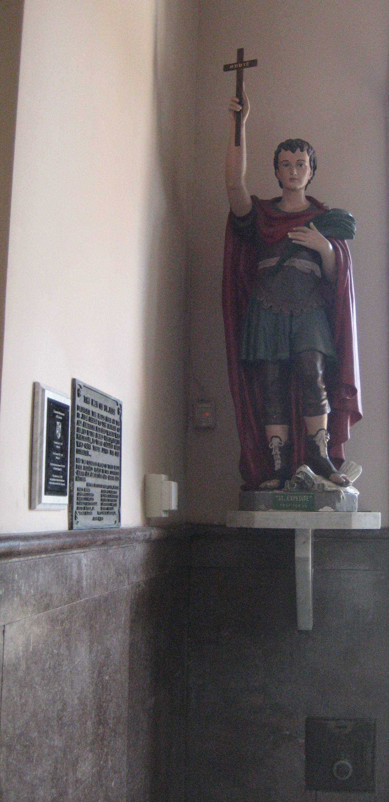

New Orleans & hoodoo
A folk-magic Expedite fed pound cake and paid in published thanks, syncretised with Louisiana Voodoo.

In New Orleans, Expedite crossed out of the church and into folk magic — and became one of the city's most beloved and most photographed saints.
The chapel and the statue
Documented — His statue stands beside the door of the Our Lady of Guadalupe Chapel (the International Shrine of St. Jude) on Rampart Street — a building erected in 1827 as the yellow-fever mortuary chapel, when the dead were too contagious to bring into the main churches. The statue is often called the most photographed saint's image in the city. Practitioners take its position by the entrance as the rule for where he belongs on a home altar: at the threshold.
Feed the saint
Practitioner — The defining New Orleans practice is that you pay Expedite, and the classic payment is pound cake — locally, a Sara Lee pound cake left at his feet in thanks for a favour granted. The logic is Voodoo logic: one must feed the spirits.
Scholarship — The earliest hard record complicates the cake, though. Harry Middleton Hyatt's fieldwork of 1935–39 recorded a New Orleans informant for whom the debt was flowers, not cake — and the penalty for withholding them was severe: "someone out of the house will pass on." The cake may be the more recent, more famous form of an older flowers-and-consequences bargain.
Paid in public thanks
Practitioner — The other half of the contract is publicity. You promise, if the favour is granted, to make your thanks public — historically by placing a thank-you notice in the newspaper, a custom shared with (and probably borrowed from) the personal-column notices to St. Jude. That practice has migrated online: gratitude pages and hashtagged thanks now serve as the modern published payment.
Syncretism — and its limits
Practitioner — Across the street from St. Louis Cemetery No. 1, where Marie Laveau is buried, offerings are left to Expedite as a Voodoo saint, "the spirit standing between life and death"; some practitioners fold him into a Baron-Samedi complex. But this is explicitly a New Orleans development — in Haiti the Ghede take a black or purple cross, not this saint.
Dissent — Not everyone agrees he belongs to Voodoo at all. Some practitioners insist Expedite is "not a typical Voodoo spirit… not of African origin," and that serving him is simpler than working with the lwa — a Catholic saint doing folk-magic work, no more.
The trade
Commercial — A durable supply business surrounds him: the Lucky Mojo Curio Co. (cat yronwode) sells a full Saint Expedite line — dressing oil, incense and sachet powders, bath crystals, vigil candles — "for rapid results, luck in a hurry, an end to procrastination and delays." Reliable as evidence of what the trade sells and believes, not as historical authority.